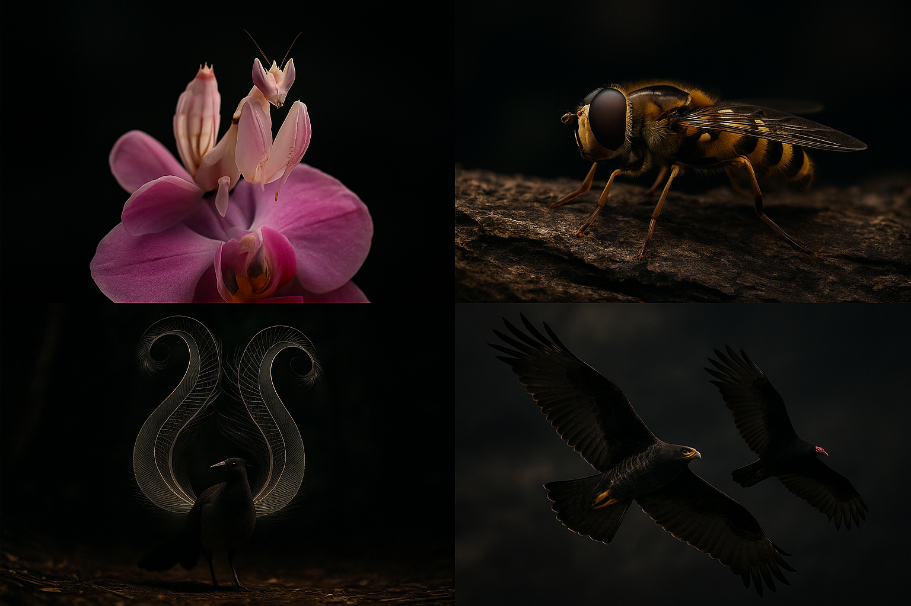

When Life Dresses as Something Else
Nature has a problem: survival is a full-time job and most organisms can't afford a resume. So some of them decided to just... become someone else. Mimicry — when one organism evolves to resemble another organism, or an object, or even a sound — is one of the most common and cunning strategies in biology. It shows up everywhere: in butterflies, sharks, moths, birds, fish, and even fungi. And once you start looking for it, you won't stop seeing it.
The core idea: Evolution doesn't care about originality. If looking like something dangerous gets you a few more generations, the genes stick. Mimicry is what happens when natural selection rewards deception.
Named after Henry Walter Bates, who spent years in the Amazon in the 1850s and noticed something strange: a ton of different butterfly species all seemed to share the same warning colors — bright orange, black, red. But not all of them were actually dangerous. Some were completely harmless. They were free-riding on the reputation of the toxic species.
The logic is elegant: predators learn to avoid certain color patterns after getting sick a few times. If you're a harmless species with a convincing-enough look, you benefit from that learned wariness without paying the cost of actually being toxic. Evolution rewards the deception.
That bee flying around your picnic? There's a good chance it's actually a hoverfly — completely harmless, no stinger, no colony to defend. It just looks exactly like a wasp because the yellow-black stripe pattern triggers the same predator response. Hoverflies have evolved this coloration independently multiple times. They don't even have waists (wasps do), but from a distance, in motion, they're indistinguishable. You're already swatting at nothing.
Even more interesting: the resemblance isn't just visual. Some hoverfly species have evolved to mimic the behavior of wasps too — the way they move, the way they hold their wings. The whole package.
For over a century, textbooks taught this as the textbook case of Batesian mimicry: the beautiful orange monarch is toxic (it sequesters cardenolides from milkweed as a caterpillar), and the similar-looking viceroy was the harmless mimic. A classic case of deception.
Then researchers actually tested the viceroy's toxicity. Turns out: the viceroy is also toxic — just differently. Both butterflies are unpalatable to birds, and both benefit from looking identical. The more predators learn to avoid one, the more both survive. This is Müllerian mimicry — where both parties are genuinely dangerous and share the same warning signal for mutual benefit. The textbooks had to be rewritten.
Here's where it gets dark. What if you're not trying to avoid predators — you're trying to ambush prey? Aggressive mimicry is when a predator or parasite evolves to resemble something harmless, useful, or even beneficial, getting close enough to strike.
The zone-tailed hawk is a raptor found in the Americas. It looks like a red-tailed hawk — which prey animals have good reason to fear. But zone-tailed hawks have evolved a trick: they deliberately mimic the flight pattern and silhouette of the turkey vulture, a completely harmless scavenger.
Turkey vultures are ignored by small mammals and birds. Zone-tailed hawks fly among them, soaring in the same lazy circles, holding their wings the same way. Prey animals below don't flinch. Then, when the hawk spots something tasty, it breaks formation, drops altitude behind cover, and attacks. It's one of the few documented cases of a predator actively using Batesian-style mimicry for predation rather than defense.
On coral reefs, the bluestreak cleaner wrasse is famous — it sets up "cleaning stations" where larger fish come to have parasites removed. The client fish get cleaned; the wrasse gets a meal. A mutually beneficial relationship. It's one of the most iconic mutualisms in the ocean.
The false cleanerfish (Aspidontus taeniatus) has figured out how to exploit this trust. It looks almost exactly like the cleaner wrasse — same size, same colors, same body shape, same swimming style. When a client fish approaches expecting a cleaning, the false cleanerfish nips a mouthful of fin or scales and swims away. The deception is nearly perfect. What's remarkable is the mimicry even includes the dance — the specific swimming pattern that cleaner wrasses use to attract clients. It's predatory betrayal disguised as a spa day.
The death's-head hawkmoth has a skull-shaped marking on its thorax, which is unsettling enough. But its actual trick is more sophisticated: it steals honey from beehives without being attacked. How? It mimics the chemical signature of bees — their pheromones. The bees literally cannot tell it's not one of them.
The moth has also evolved thick cuticle armor to protect against stingers, and specially adapted claws for climbing around the hive. Once inside, it drinks honey and leaves. Bees don't attack what they recognize as a colony member. The deception is entirely chemical — the moth has evolved to smell like something it's absolutely not.
The orchid mantis is commonly described as mimicking an orchid flower to lure pollinator prey. It's often called the textbook case of aggressive floral mimicry. But here's the twist from recent research: it doesn't actually mimic any specific orchid species. It looks like a generic white or pink flower. And that's even better.
When researchers set up experiments comparing insects' attraction to orchid mantises versus actual flowers, the mantises won. Insects approached the mantises more often than real flowers. The mantis isn't just a good disguise — it's a superstimulus. It's a better flower than actual flowers. Flying insects see something vaguely flower-shaped, get drawn in by the color contrast, and fly directly into the mantis's raptorial forelegs. It evolved to be an exaggerated, irresistible version of something attractive, not an accurate copy of it.
Mimicry isn't just visual. Sound is an equally powerful channel for deception.
The superb lyrebird of Australia is the most accomplished sound mimic in the animal kingdom. It can replicate almost any sound it hears: chainsaws, car alarms, camera shutters, rifle shots, dogs barking, construction equipment, and the calls of over 20 bird species. One famous individual learned the sounds of hammers and drills during the construction of a panda enclosure at Adelaide Zoo.
Why does it do this? Male lyrebirds use their mimicking abilities to impress females during mating displays. The more diverse and impressive your sound repertoire, the more desirable you seem. Some researchers think the ability to accurately replicate complex artificial sounds signals cognitive fitness — if you can learn and reproduce these unusual sounds, you probably have good brain architecture.
The chainsaw thing is both hilarious and ominous: lyrebirds have been heard in areas where logging is active, and they're apparently picking up the chainsaw sounds and including them in their songs. In decades to come, historical recordings of lyrebirds may be the only remaining audio evidence of extinct chainsaw models.
The uncanny dimension: Sound mimicry forces you to confront mimicry differently than visual mimicry. You can't look away from a visual trick — but when a bird sounds exactly like a chainsaw, your brain simply refuses to accept that a living thing is making that sound. The uncanny valley exists in audio too.
Mimicry isn't just an animal game. Some orchids have evolved to look and smell exactly like female insects — specifically the insects that male insects are trying to mate with. The orchid produces the visual shape and even releases pheromones that mimic the female's scent. Males arrive ready to mate and instead pollinate the flower. The insects get nothing. The orchid wins. Sexual deception in plants is surprisingly common — over 400 orchid species do this.
There are also fungi that produce chemicals that attract male fruit flies, then release spores when the fly lands. The fly thinks it's getting a mating opportunity and instead becomes a fungal delivery system.
Convincing mimicry requires coordinating multiple signals simultaneously. The zone-tailed hawk doesn't just look like a vulture — it flies like one. The false cleanerfish doesn't just match the cleaner's colors — it performs the cleaning dance. The death's-head moth doesn't just look like a bee — it smells like one, has the right kind of cuticle, the right claw structure. The orchid mantis's color matching has to work under the specific light wavelengths that insects see (which includes UV, invisible to humans).
In many cases, mimics are "good enough" rather than perfect. Predators often use multiple cues — if any single cue triggers avoidance, the mimic survives. This is why so many hoverflies are convincing from a distance but obviously wrong up close. They only need to fool predators for a split second.
The arms race: Mimicry creates some of the most intense evolutionary arms races. As predators get better at detecting fakes, mimics have to get better at faking. And as mimics improve, predators have to become more discerning. This is why so many mimicry systems involve multiple species converging on the same pattern — it's not just mutual protection, it's also that there's safety in the mimic being abundant enough that predators learn the pattern reliably. A rare, perfect mimic is more likely to slip through — but also less likely to establish the association in predators in the first place.
Here's the thing about mimicry that makes it philosophically interesting: it requires a "receiver" who can be fooled. A Batesian mimic is only protected if predators have brains sophisticated enough to learn patterns and remember bad experiences. Without intelligence — without something that can be deceived — mimicry has no value. Which means mimicry may have helped drive the evolution of intelligence itself. The ability to detect mimics created selective pressure for smarter predators; the ability to become a better mimic created selective pressure for smarter prey. Deception and detection co-evolved, and intelligence was the result on both sides.